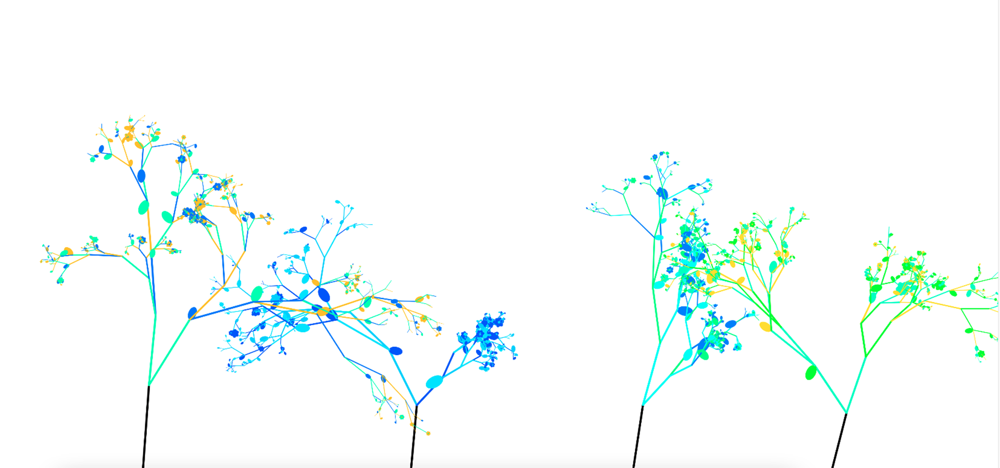
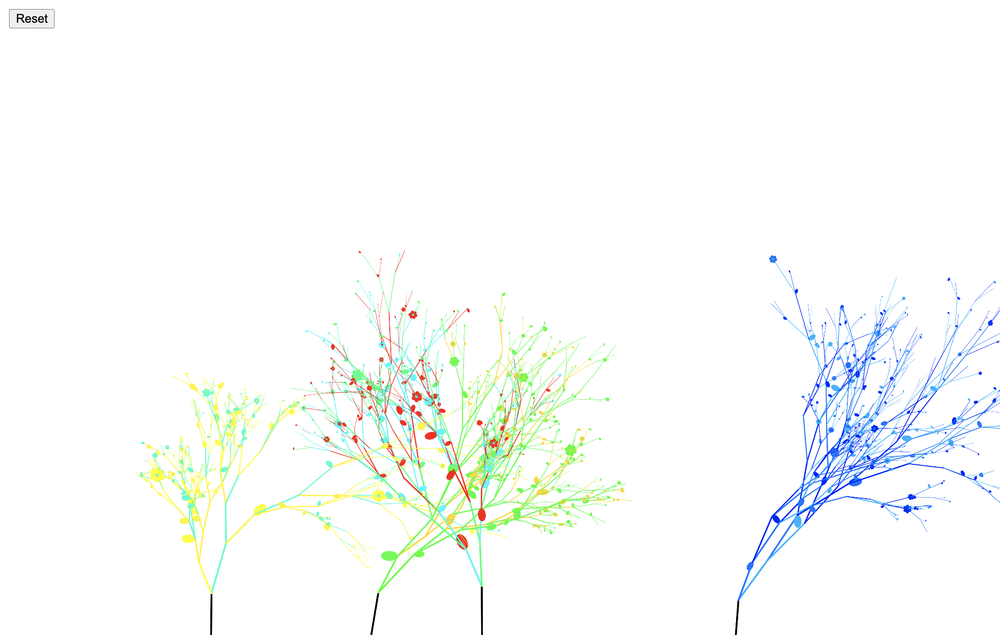
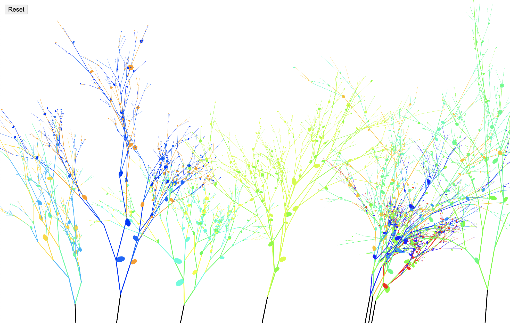

Forêt de Chromatophyllacées est composée d'arbustes de la version originale des Chromatophilacées, les plantes numériques
que j’ai imaginée grâce à des générateurs. Plusieurs arbustes y évoluent simultanément, créant
un paysage végétal dynamique. La barre espace permet de faire apparaître les plantes et de suivre leur développement.

